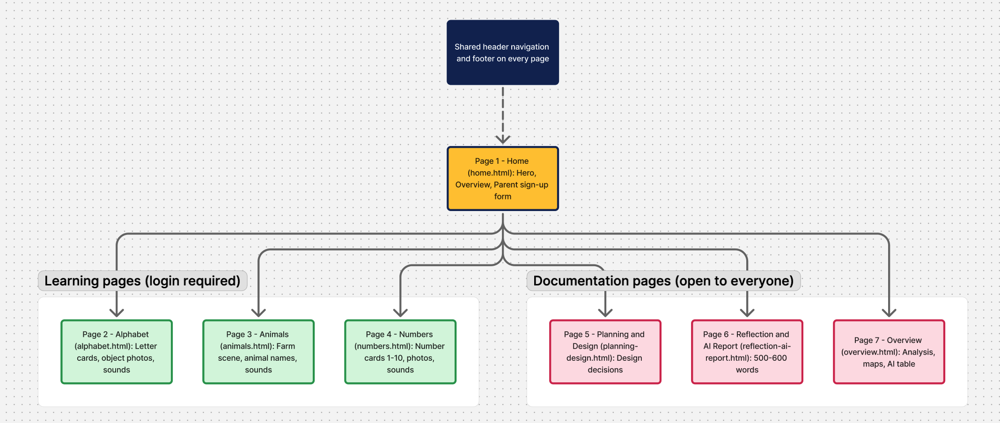
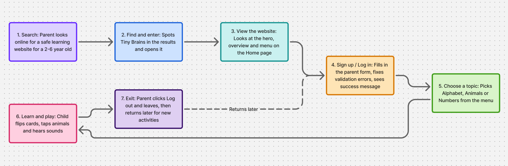
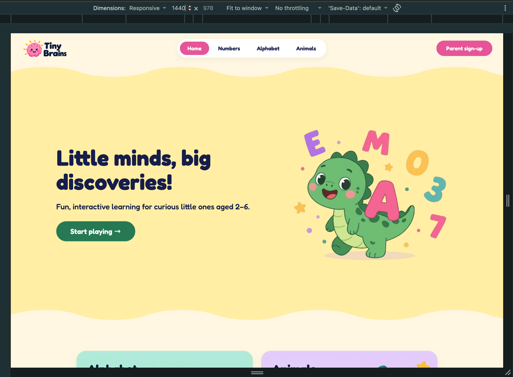
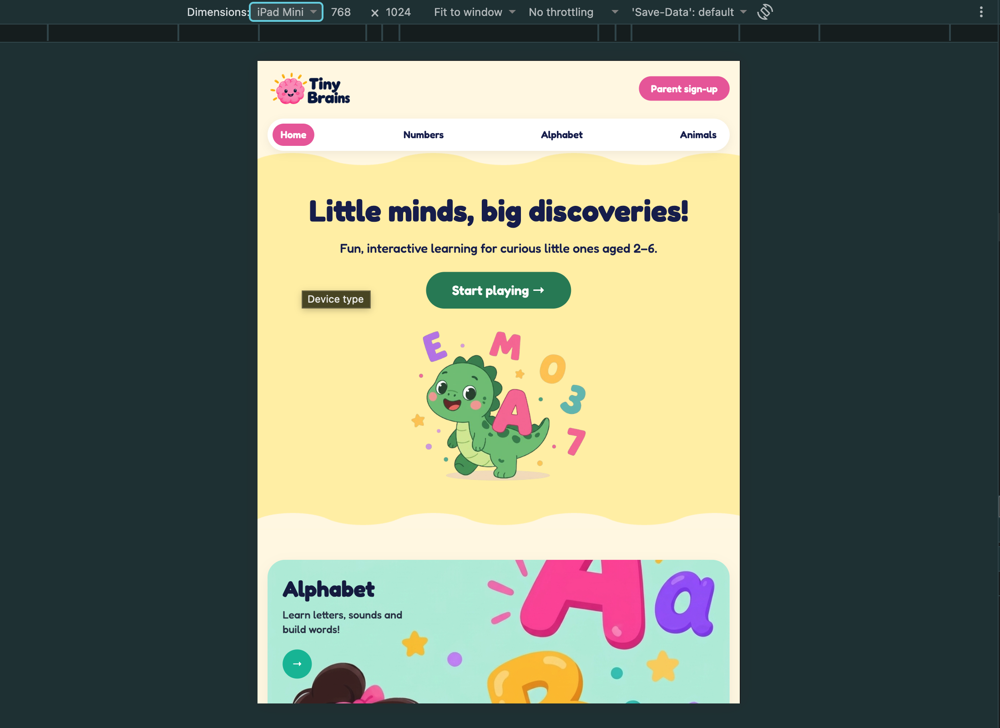
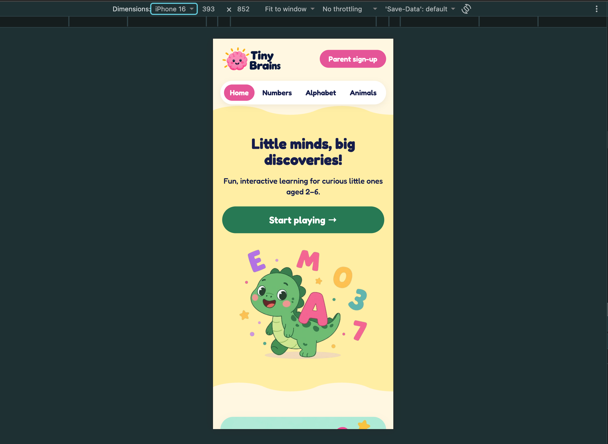

Project Overview
The analysis, structure and standards behind Tiny Brains.
1. Project overview
Website title
Tiny Brains: Learn, Play, Grow
Website category
Educational website
Problem statement
Children aged 2 to 6 learn through colour, sound and play, but many online resources are built for older learners: too much text, cluttered layouts, small buttons and ads. Free sites often rely on pop-ups and advertising, which worries parents.
Tiny Brains offers a safe place to practise letters, numbers and animals, with large buttons, bright visuals, short activities, no ads and no external links.
Target audience
Children (2 to 6)
Primary users. Recognise letters, numbers and animals through pictures, colours and sounds.
Parents
Supervise play and register through the sign-up form.
Teachers
Use the site as a classroom or screen-time learning aid.
Project objectives
- Build a seven-page, responsive website with HTML5, CSS3 and JavaScript.
- Provide three learning areas: Alphabet, Numbers and Animals.
- Apply child-centred design: large targets, balanced colours, readable font, minimal text.
- Include interactivity: clickable cards with sounds on all three learning pages.
- Validate the registration form (names of 3+ characters, 8-digit mobile, valid email) with clear messages.
- Work on desktop, tablet and mobile.
- Follow ethical and legal practice, and document the project professionally.
2. Requirement analysis
Functional requirements
| ID | Requirement | Validation / detail |
|---|---|---|
| User registration | ||
| FR-1.1 | A registration form for parents and guardians on the Home page | Form shown on the landing page |
| FR-1.2 | First name field | Required; at least 3 characters |
| FR-1.3 | Last name field | Required; at least 3 characters |
| FR-1.4 | Mobile number field | Required; exactly 8 digits |
| FR-1.5 | Email address field | Required; standard email format |
| Form validation | ||
| FR-1.6 | Validation feedback on the form | Inline error under the failing field; success message on valid submission |
| Navigation system | ||
| FR-2.1 | A persistent navigation bar and footer on all 7 pages | Shared header and footer components |
| FR-2.2 | Header links to Home, Numbers, Alphabet and Animals; footer links to Planning & Design, Reflection and Overview | All 7 pages reachable |
| FR-2.3 | The current page link is highlighted | Active link in strong pink |
| Interactive features | ||
| FR-3.1 | Numbers 1 to 10 as interactive cards with audio pronunciation | Sound plays on tap or click |
| FR-3.2 | Alphabet cards with object images and audio pronunciation | Cards flip; sound plays on click |
| FR-3.3 | Animal cards with a picture, the animal's name and its sound | Sound plays on click |
| FR-4.1 | Buttons, cards and forms adapt to desktop, tablet and mobile | See the responsive plan |
| FR-4.2 | Sound and animation give immediate feedback to young learners | On tap or click |
Non-functional requirements
Performance
The letters, animal images and activities should load quickly, without noticeable delay.
Accessibility
Large text, clear fonts, high-contrast colours and large buttons, so children aged 2 to 6 can see and use the content easily.
Security
Protect parents' information and collect no personal information from children, and nothing unnecessary.
Usability
A simple, child-friendly interface. Children can move between letters, animals and activities without complicated instructions.
Responsiveness
Works properly on desktops, tablets and phones, with buttons, images and text that stay easy to use.
3. Site map
The page hierarchy and navigation structure of the seven pages.

4. User journey map
How a user moves through the website, from entry to exit.

5. Low-fidelity wireframes
The wireframes are on the Planning & Design page.
6. High-fidelity mockups
The mockups, showing layout, colour scheme, navigation and interface design, are on the Planning & Design page.
7. UI style guide
Colour palette
Typography
| Component | Style |
|---|---|
| Buttons | Fully rounded, white text; green for main actions, pink for sign-up; grow slightly on hover |
| Cards | Rounded corners, soft shadow, lift on hover |
| Navigation bar | Sticky, cream; links in a white pill; active link in strong pink |
| Forms | Rounded inputs; green focus border; red border and message when invalid |
8. Responsive design plan
The Home page at three screen sizes. The same content rearranges to fit each one.



9. AI utilization plan
AI acted as an assistant. The team wrote the HTML, CSS and most of the JavaScript, and reviewed and tested all AI output. AI also helped with the project documentation, which the team checked and corrected against the real website. The reflection is on the Reflection & AI report page.
Tools, purpose and expected outcomes
| AI tool | Purpose | Expected outcome |
|---|---|---|
| ChatGPT | Turn sketches into mockups; suggest a palette; create illustrations; design card layouts | Polished mockups, a child-friendly palette and consistent illustrations |
| Canva AI | Create letter cards and cubes | Colourful alphabet card images |
| Claude (code) | Help with sound playback and card-change JavaScript | Working interactive features that the team understands and adapts |
| Telnyx text-to-speech | Generate spoken names of animals and letters | Clear, child-friendly audio for each card |
| Claude (documentation) | Help organise and draft the Overview page, maps, style guide, requirements and ethical and legal sections | Clear, well-structured documentation that matches the brief |
AI documentation table
| AI tool | Prompt | Output | Our changes |
|---|---|---|---|
| ChatGPT | Turn our hand-drawn sketches into polished mockups, suggest a child-friendly colour palette, and create illustrations and card layouts | Mockups, a cream, pink, green and navy palette, dinosaur, lion and star illustrations, number images | Used the mockups as a guide only; wrote all the HTML and CSS ourselves |
| Canva AI | Create colourful letter cards and cubes for the alphabet page | Alphabet card images | Chose the images that suited our layout and placed them in our own cards |
| Claude (code) | How to play a sound when a card is clicked, and how to change a card on interaction | Code suggestions for sound playback and card changes | Reviewed, tested and adapted the code to our website's structure |
| Telnyx text-to-speech | The name of each animal and letter, read in a child-friendly voice | Audio files for the spoken names | Listened to each recording and matched it to its card |
| Claude (documentation) | Help organising the Overview page and writing the maps, style guide, requirements and credits table | Drafts of the Overview sections | Checked against the real project, corrected the details and added our own sources |
10. Ethical and legal practices
Copyright and credits
| Asset | Used in | Source | License |
|---|---|---|---|
| Fredoka font | All pages | Google Fonts | SIL Open Font License |
| Number images | Numbers | ChatGPT | AI-generated (see AI plan) |
| Letter cards and cubes | Alphabet | Canva AI | AI-generated; Canva terms |
| Spoken names | Animals, Alphabet | Telnyx text-to-speech | AI-generated; Telnyx terms |
| Farm and animal images | Animals | No license stated; educational use only | |
| Animal sound effects | Animals | Pixabay Sound Effects | Pixabay Content License |
Privacy and safety
- Only a parent's name, mobile number and email are collected. Nothing is collected from children, and no passwords are stored.
- Data stays in the browser (localStorage). It is not encrypted, so a real launch would need a secure backend and a privacy policy.
- No ads, external links or chat features.
Accessibility
Alt text, ARIA labels and live regions, keyboard-accessible cards, a readable rounded font, large tap targets and a responsive layout.
Academic integrity
The website's code, content and design decisions are the team's own work. AI was used as an assistant for some images, sounds, code suggestions and the written documentation. All of it is listed in the AI plan above, the team reviewed and corrected it, and external sources are credited.